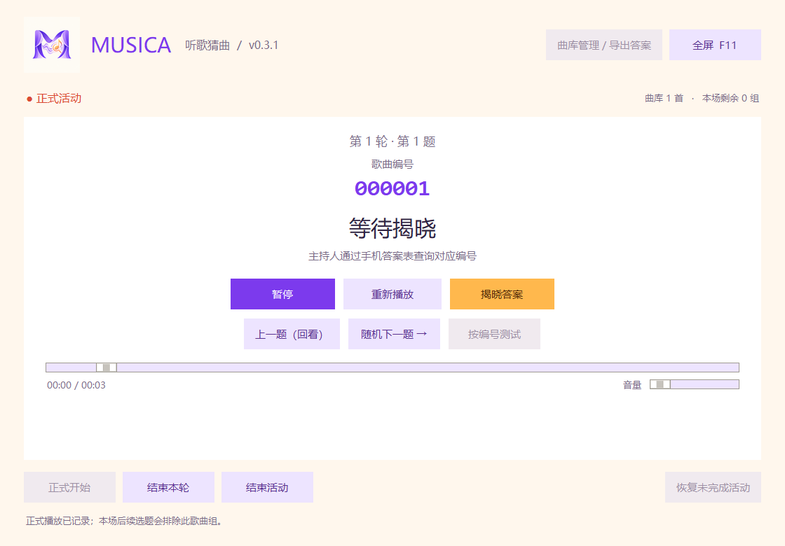

你好，这里是 Larry-Tech
保持好奇，
慢慢造点东西。
这里存放我做的小工具、有趣的尝试，和一些还没长大的想法。有的已经可以带走，有的还在工作台上，慢慢打磨。
已上架 1 个作品，给下一次灵光一闪留了很多位置。
写给自己的便签 / 001
有一个小想法。
那就，做出来吧。
收集灵感，动手实现，再改好一点。
持续折腾中 ↗
一个人的作品空间，不止一种可能。
01 个已发布作品 · 04 个灵感分区
我的作品架
挑一个感兴趣的角落。
按分类逛逛。已发布作品可以进入详情；空着的格子，留给以后值得分享的东西。
1 个已发布作品 · 3 个筹备中的分类
想少点几下鼠标。
给重复劳动找个帮手，把时间还给更有意思的事。这里暂时还不能下载——捷径本人，正在绕路赶来。
分类占位 · 工具还在酝酿，先把位置擦干净让数据说两句。
留给研究辅助、数据处理和探索小工具。问题已经举手了，答案还在找鞋；等整理成能用的作品，再请它上台。
分类占位 · 正在攒灵感，也欢迎好问题有没有用，先试试。
收留那些“要不试试”的念头、小交互和奇怪但有趣的实验。灯已经开了，下一件作品目前还是草稿上的一个圈。
分类占位 · 脑洞施工中，请带好好奇心最近在折腾
工作台上，还有空位。
这些是想探索的方向，还不是发版预告。有能拿得出手的新作品，就会把它放上来。
- 01继续打磨 Musica先让已经上架的小工具，细节再好一点。
- 02收集下一个实用点子从日常的小麻烦里，找值得做成工具的东西。
- 03给突发奇想留点位置毕竟，好玩的东西有时就从一句“要不呢”开始。
作品背后的人
你好，欢迎来我的小角落。
我喜欢把一些小想法，做成能实际用起来的东西。这里用来分享这些作品，记下每次修改，也给下一次尝试留个位置。
目前，Musica 是第一个上架的作品。接下来，希望这个架子能慢慢丰富起来。也谢谢你在它还不那么满的时候，就来逛了逛。
在 GitHub 找到我 ↗